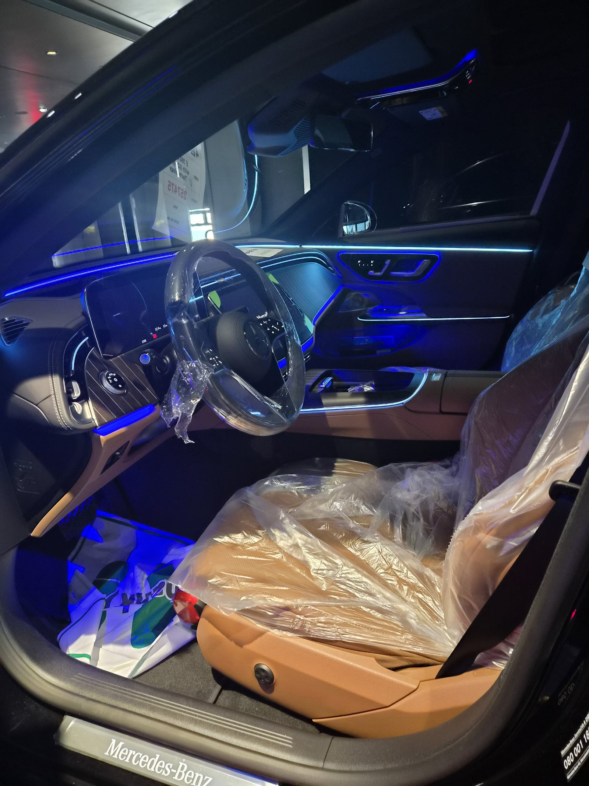
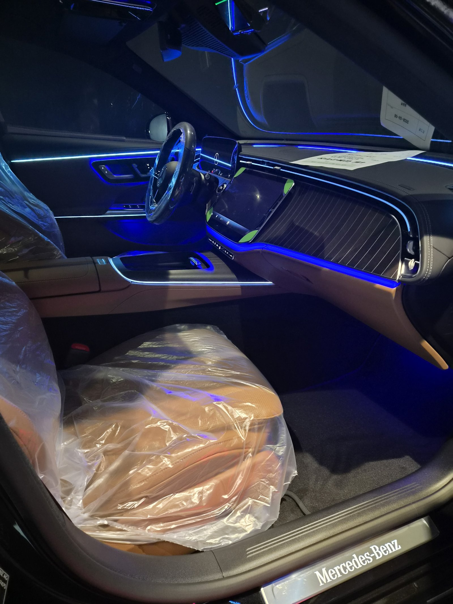
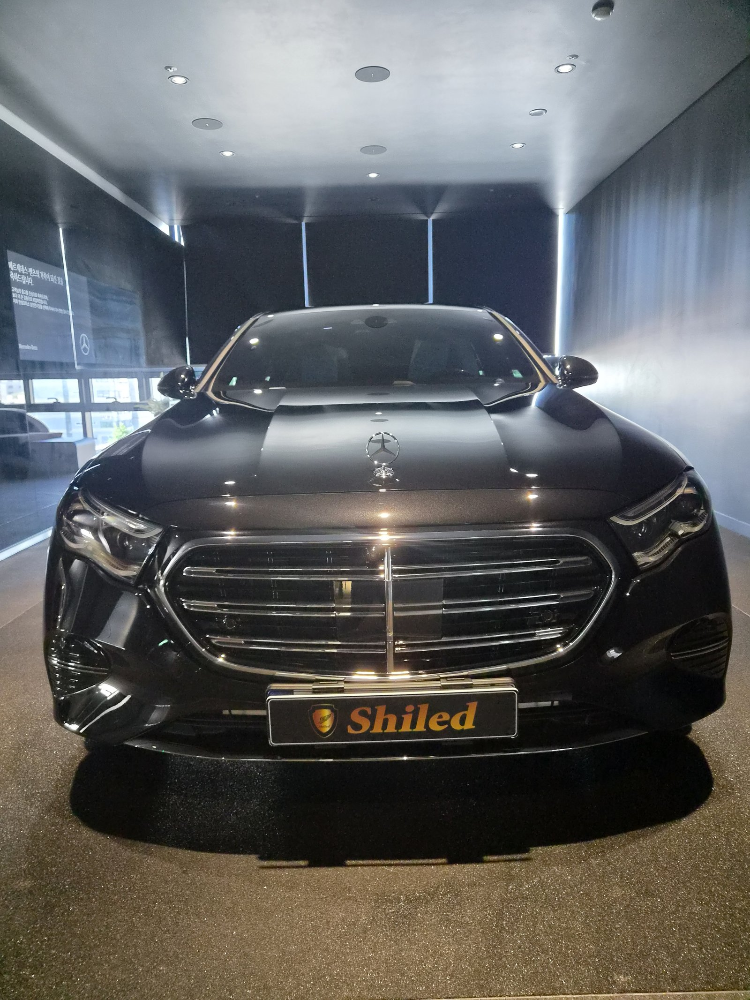
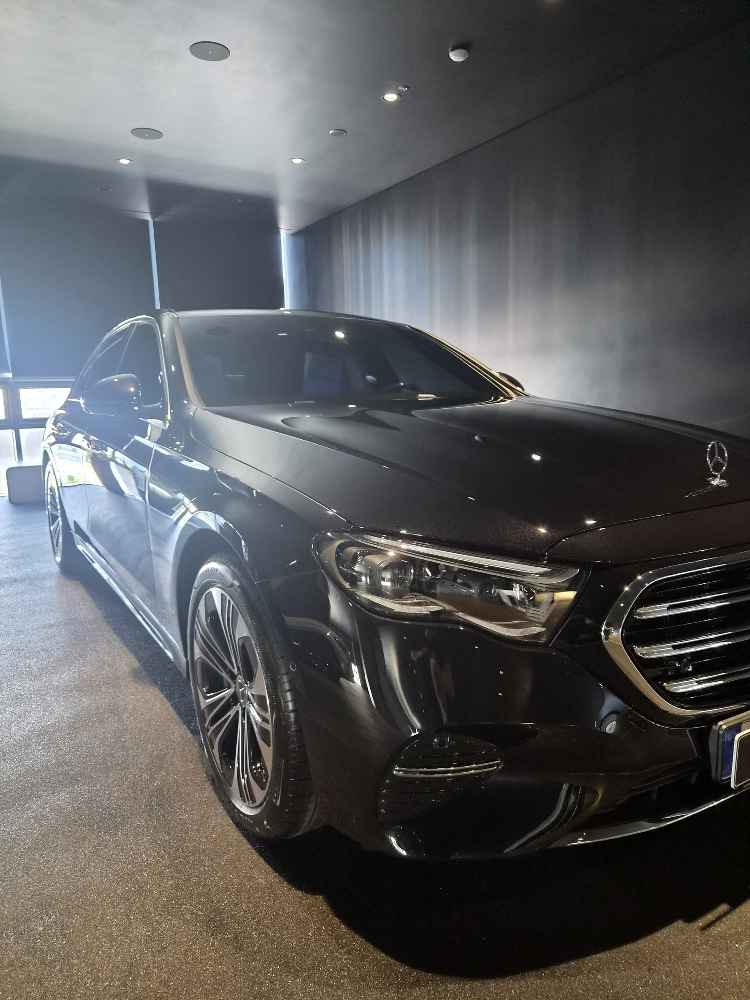
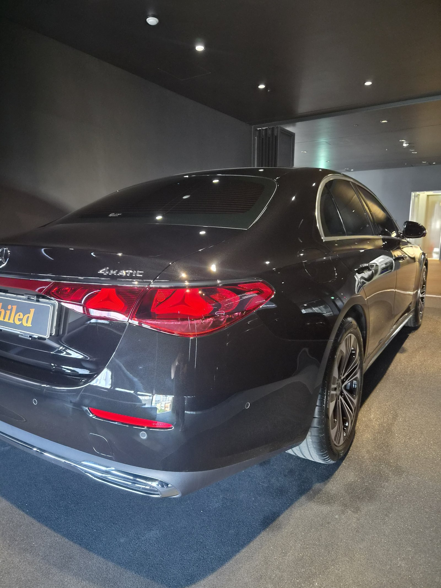
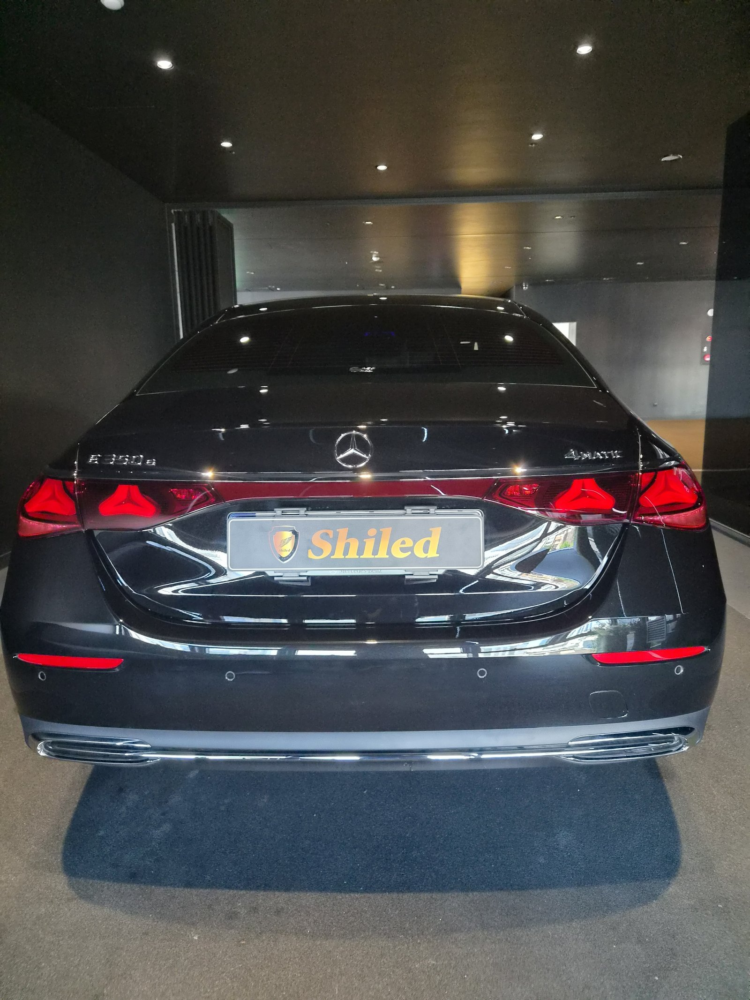
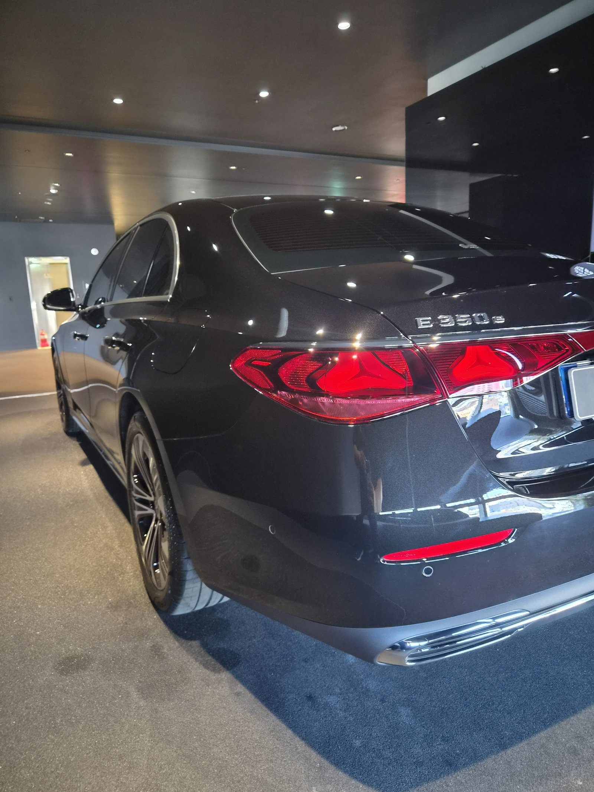

벤츠 E350e 검정입니다. 아직 출고 전, 새 차입니다.
이 차는 출고 전에 F5 유리막코팅으로 진행했습니다.

플러그인 하이브리드 신차도 출고 전 코팅이 답인 이유
구동 방식이 다르다고 도장 관리 원리가 달라지지 않습니다.
도장면이 가장 깨끗한 신차 상태일 때 코팅을 올려야 오래갑니다. 출고 후 운행과 세차가 쌓이기 전, E350e도 똑같이 출고 전 코팅으로 진행했습니다.

검정 신차에 왜 F5인가
F5는 색감 깊이를 끌어올려 글로시함을 극대화하는 코팅입니다.
검정은 발색이 얼마나 깊어 보이느냐가 관건입니다. F5를 올리면 젖은 듯한 윤기가 생겨, 같은 검정이라도 더 진하고 도톰하게 보입니다.


기술자의 팁
신차라도 운송·보관 중 묻은 미세 오염을 디테일링 세차와 탈지로 걷어낸 뒤에 코팅을 올립니다. 깨끗한 바탕 위에 올려야 코팅이 제대로 밀착합니다.


마감 후
조명이 도어 라인과 트렁크 리드 위로 왜곡 없이 이어집니다. 코팅막이 고르게 올라갔다는 증거입니다.

자주 묻는 질문
Q. E350e도 F5 유리막코팅이 필요한가요?
A. 필요합니다. 플러그인 하이브리드도 도장 관리 원리는 같습니다. 검정 차체에 F5를 올리면 색감 깊이가 더 살아, 신차 첫인상을 오래 지킬 수 있습니다.
Q. 검정 신차에는 왜 F5를 권하나요?
A. F5는 색감 깊이를 끌어올려 글로시함을 극대화합니다. 검정에 젖은 듯한 윤기를 더해 더 진하고 도톰하게 보이도록 합니다.
Q. 신차코팅도 전처리를 하나요?
A. 합니다. 신차라도 운송·보관 중 미세 오염이 묻습니다. 디테일링 세차와 탈지로 표면을 정리한 뒤 코팅을 올려야 제대로 밀착합니다.
Q. 쉴드광택 위치와 예약은 어떻게 하나요?
A. 부산 남구 유엔로220 1F 쉴드광택입니다. 예약·상담은 010-3384-1850, 대표 최한중이 직접 상담하고 책임 시공합니다.
새 차일수록 시작점이 다릅니다. 가장 깨끗할 때 입혀두십시오.
제품을 직접 만드는 사람이 직접 시공합니다.
부산에서 신차코팅을 고민 중이시면 편하게 연락 주십시오.
어떤 차를 타냐보다 어떻게 타냐가 중요합니다~!
📞 010-3384-1850 견적 문의쉴드광택 · 부산 남구 유엔로220 1F · 대표 최한중